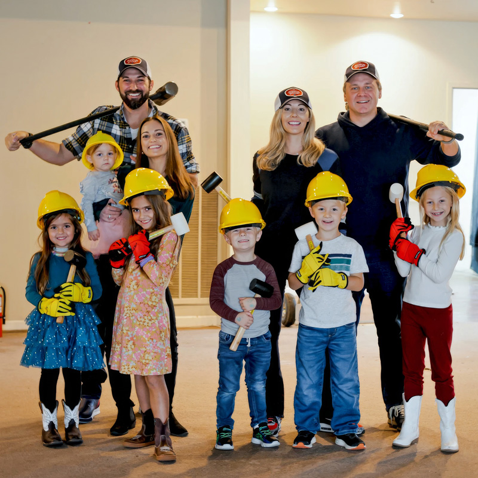
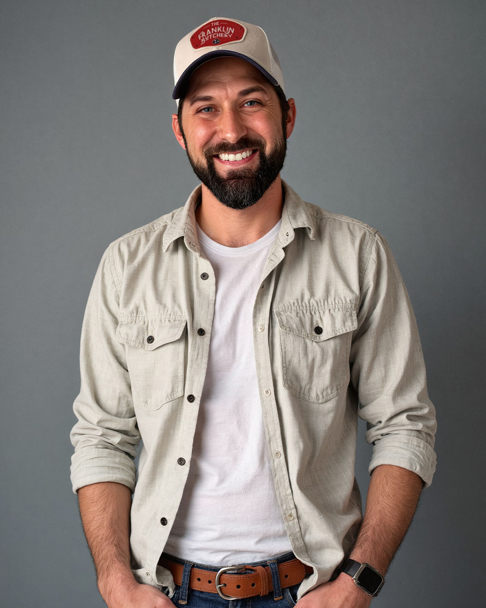

The Origin
It Started with
a Friendship

The Franklin Butchery was born the way the best things usually are, over good food and honest conversation between two families who became fast friends.
It started at a school carnival. Our daughters met in kindergarten and quickly became inseparable, and before long, so did we. Backyard cookouts turned into conversations about what Franklin was missing. More than once, we ran into each other at the grocery store, both searching for a quality cut of meat and leaving disappointed.
That was the moment. We looked at each other and said, “What are we doing? This town needs a butcher shop.”
What began as a simple idea grew into something bigger. We found this space in the heart of Franklin and saw the potential for more than a place that sold meat. We wanted something warm and unexpected. A place where you walk in and think, “This is cool.” A place where you can watch your steak being cut, ask for the exact thickness you want, and leave with a meal your family will remember.

The Butcher
Carlos Tirado
Carlos brings years of hands-on experience breaking down whole animals and crafting cuts with precision and care. From dry-aged ribeyes to house-made sausage, every piece that leaves the case reflects his dedication to the craft. His glass-walled cut room is the heart of the shop, where transparency and quality meet.
The Chef
Greg Ische
Greg leads the kitchen with a chef-driven vision that turns premium ingredients into unforgettable meals. From elevated sandwiches built with house-cut meats to the Meals To Go program, his focus is simple: make every dish worth coming back for. His collaboration with Carlos is what makes this place more than a butcher shop.